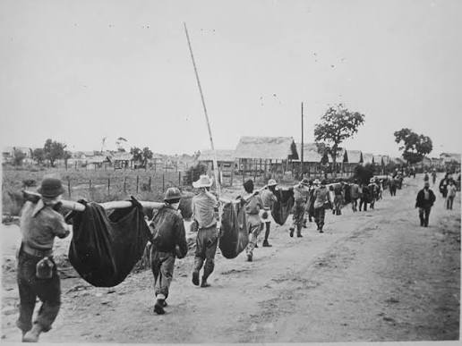
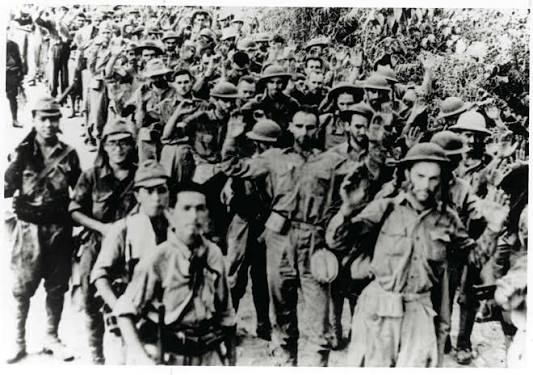

THE BATAAN DEATH MARCH
April 9, 1942
A Story of Courage, Suffering, and Remembrance
ABOUT THE BATAAN DEATH MARCH
After the fall of Bataan on April 9, 1942, about 76,000 Filipino and American soldiers were ordered to march to a prison camp in Capas, Tarlac.
The prisoners walked more than 100 kilometers under the brutal heat with little to no food and water.
Thousands did not survive.
